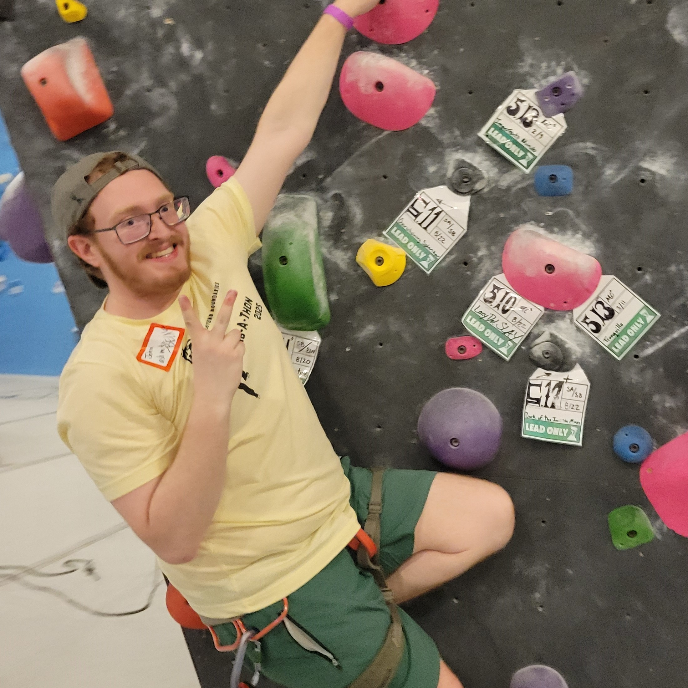

About Me:
I was originally born in Fairfax, VA, but moved with my family to the Richmond, VA (RVA) area when I was young. For high school, I applied to the Mathematics and Science specialty center at Clover Hill High School and was accepted. In a class of about 100 students, I made my mark by participating in clubs and taking 9 AP classes. I grew to love math, specifically, during my time there. I got special permission to take Precalculus at the local community college over the summer so that I could skip to Calculus in my junior year. The highest math class the school offered was a Linear Algebra class that I made sure to take in my last year there. I think the exercises we did from Gilbert Strang's Introduction to Linear Algebra gave me the foundational appreciation for mathematics that I used to pursue further studies. A lot of who I am as a person can be attributed to the hundreds of volunteer hours and character building hours that we did in the Midlothian YMCA Leaders' Club, where I was an officer and a club member for several years.
I attended VCU starting in 2019, where I studied Mathematics and History. While the pandemic disrupted the normal college experiences, I pushed on with my studies, and graduated both degrees with honors in 2023. During my time at VCU, I got a job tutoring math at the Campus Learning Center, where I learned how rewarding it could be teaching students. In my last year of undergraduate studies at VCU, I joined the 4+1 program for mathematics, which allowed me to take graduate level courses as an undergraduate student and get a graduate degree in only 1 additional year of study. I joined the VCU Graduate School in 2023, and graduated with honors in 2024 with an MS in Mathematics. While I was there, I was a Teaching Assistant for Precalculus (MATH 151) and the Instructor of Record for Introduction to Contemporary Mathematics (MATH 131)
I started my career recently by teaching high school, before I moved on to an adjunct position teaching at BCC. Currently, I teach Precalculus I there (MTH 161), and if you are a student of mine looking for resources for class, go to the Resources tab.
When not studying math or at work, I love indoor rock climbing. I often climb with friends, but I'm always happy to climb with someone new, even if I have to show them the ropes (pun intended). I've participated in a few local events, and I'm always interested in more. My highest rated climb was a 5.12, but I ordinarily climb at a 5.10–5.11 level top-rope, or a 5.9 level if I'm lead climbing. I'm a bit scared of heights, so I'm always a bit less confident when lead climbing.
Another big hobby of mine is reading. My favorite books (in no particular order) are:
- One Hundred Years of Solitude by Gabriel Garcia Marquez
- Augustus by John Williams
- Butcher's Crossing by John Williams
- The Lone Ranger and Tonto Fistfight in Heaven by Sherman Alexie
- In Cold Blood by Truman Capote
- Dune by Frank Herbert
- Brandon Sanderson's Cosmere